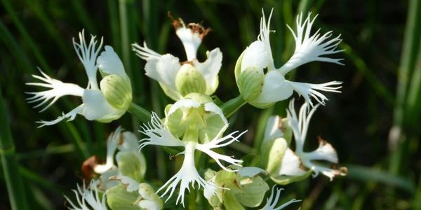

Case Study
The richest and most productive plant communities, including the grasslands typical of the Great Plains, are complex associations of different species dependent on the environment (nutrients and water), as well as ecological connections or relationships with other species. In particular, the mutual benefits of plant– pollinator relationships increase plant reproduction and population growth, increase genetic diversity of individual species, and allow more species to coexist in a plant community, all of which makes a prairie a prairie rather than an admixture of weeds. The diversity of plant species in a grassland is of more than passing interest to rangeland managers because there are clear management benefits to diversity, including increased forage production for livestock and wildlife grazing, improved soil structure, and community resilience to environmental disturbances. Yet, it is easy to overlook the complexity and diversity of pollination relationships of native prairie plants when evaluating long-term management options. Here we argue that the diversity of native grasslands depends on a diversity of pollinators.
